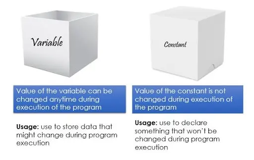
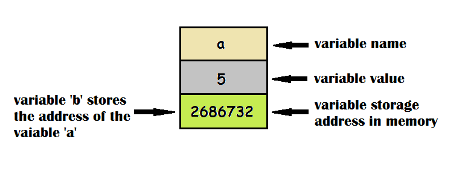

LES VARIABLEs/CONSTANTEs/LES DONNES ENTRER ET SORTIR
1.1 LES VARIABLEs
Q'est ce qu'une variable?
Dans un programme informatique, on a souvent besoin de manipuler des valeurs comme les noms des étudiants, les prix de produits, les coefficients d'une équation... Pour stocker ces valeurs on fait appel aux variables.
Une variable est une entité dont la valeur peut changer, c'est à dire qu'au sein du même algorithme (ou programme informatique) une même variable peut changer de valeurs de nombreuses fois.
Un algorithme tourne généralement autours des variables. C'est à dire que c'est derniers sont les éléments les plus importants et toutes les instructions de l'algorithme ont pour mission de leur affecter des valeurs calculées avec précision. A la fin, ce sont ces valeurs-là qui seront rendues à l'utilisateur après l'exécution.
Les variables doivent avoir un type
Dans la plupart des langages de programmation, avant de manipuler une variable, il faut préalablement déclarer son type. C'est à dire que la variable en question ne pourra changer de valeur que dans l'intervalle défini par le type qui lui est assigné.
Dans un algorithme, on se contente de 4 type de base, à savoir:
- Les entiers: qui sont des nombres sans virgule et qui peuvent être positifs ou négatifs. On parle alors de nombres entiers signés.
- Les réels: qui sont des nombres avec virgule (dite virgule flottante) et qui peuvent être positifs ou négatifs aussi
- Les booléens: qui définissent deux valeurs (dites binaires) qui sont Vrai ou Faux (ou encore 1 ou 0)
- Les chaînes de caractères: qui représentent des textes constitués de tout type de caractères comme les caractères alphabétique, numériques et symboles.
- lien ici (VEDIO!!) POUR expliquer/a>
1.2 LES CONSTANTEs
Une constante est un objet dont l'état reste inchangé durant toute l'exécution d'un programme. On ne peut jamais modifier sa valeur et celle-ci doit donc être précisée lors de la définition de l'objet. CONST PI=3.14

DATE:6/19/2022 :8.04 | | Posted by rafed link